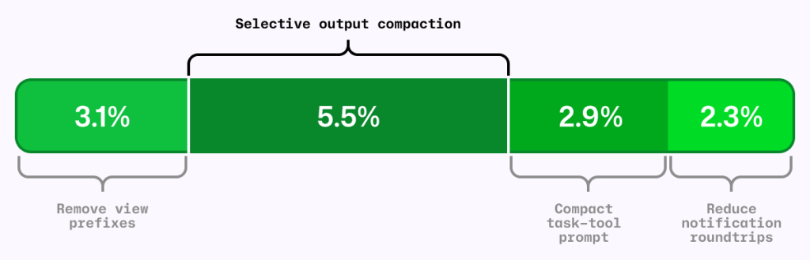
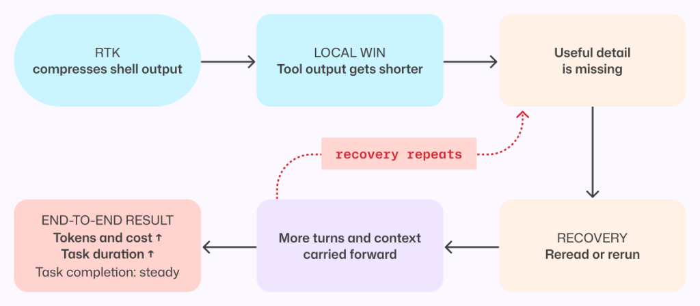
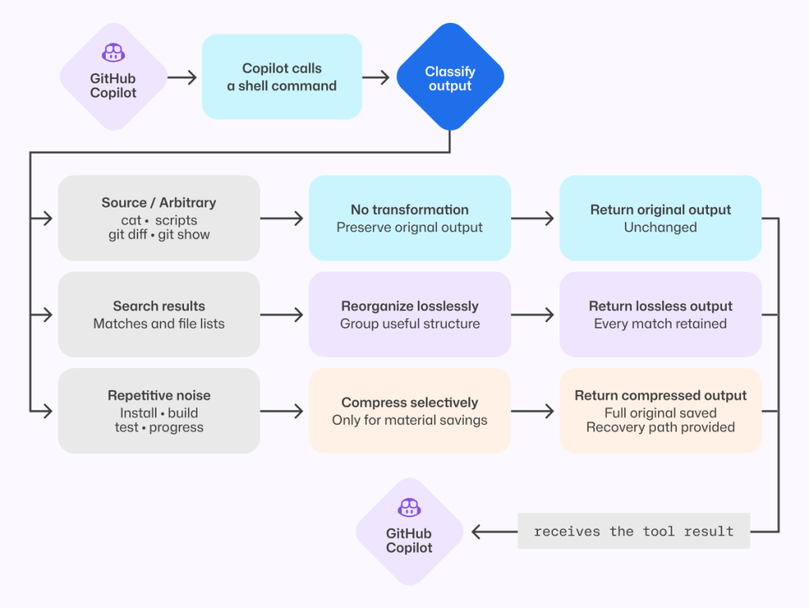
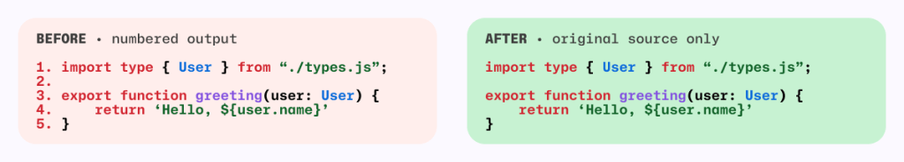
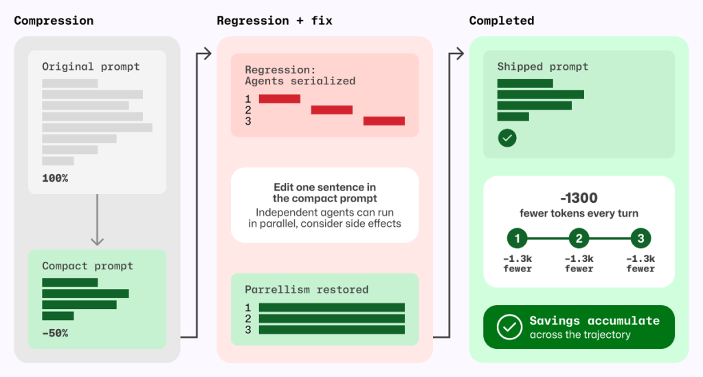
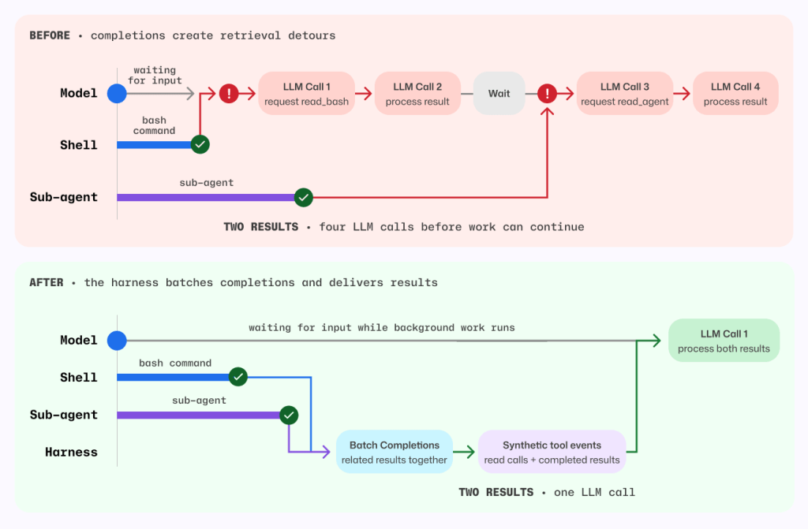

3.1%
去除读取前缀
5.5%
选择性压缩
2.9%
精简任务提示
2.3%
减少通知往返
四组 A/B 实验使用相同 AI Credits 指标，效果不一定严格相加。
GITHUB COPILOT · ENGINEERING
真正该优化的不是单次 token，而是完整任务
Erik Kristensen & Napalys Klicius · 2026.09.02
核心命题
单次响应
更短
≠
完整任务
更高效
缺失的信息会迫使智能体重读、重跑、增加轮次，并把更多上下文一路带下去。
四项线上实验

去除读取前缀
选择性压缩
精简任务提示
减少通知往返
四组 A/B 实验使用相同 AI Credits 指标，效果不一定严格相加。
局部指标陷阱

RTK 确实缩短了部分 shell 输出，但省略的细节有时正是下一步所需。
结论只适用于被测集成与负载，但足以推翻“每次调用越短越好”的目标。
FOUR CHANGES
压缩输出 · 删除格式 · 精简提示 · 消除往返
改进 01

原样保留
cat、git diff、git show 与任意脚本输出
无损重排
grep 等搜索结果分组，但不丢任何匹配
选择压缩
仅压缩 install、build、test 的重复噪声
安全机制
打开完整原始输出
重新运行命令
重复或缩窄搜索
增加模型轮次
频繁恢复 = 压缩器删掉了有价值的信息
改进 02

离线基准推理成本下降
CLI 用户日均推理成本下降
行号仍适合 diff 和短代码片段，却不该附着在每次完整文件读取上。
改进 03

元提示循环把 task 工具提示缩短约一半，却意外把谨慎建议改成硬性调度规则。
新增回归测试后，这一句恢复了并行行为，同时每轮减少约 1,300 个提示 token。
改进 04

以前4 次模型调用取 shell 结果、处理结果、取子智能体结果、再处理
现在1 次模型调用批量通知，直接附带完整结果
不压缩、不总结、不扣留信息，只移除纯检索往返，AI Credits 平均降低约 2.3%。
实验方法
未上线
在 code review 中有效，却在 Copilot CLI 在线实验中增加成本。
已上线
在大规模 code review 评估中，各自减少约 5% 平均提示 token，质量无实质变化。
同一项优化，换一个产品表面，就可能得出相反结论。
五条经验
优化完整任务
不是单次工具调用
优化编排
消除确定性的模型往返
按语义压缩
优先无损，并保留恢复路径
测试提示行为
防止精简时悄悄删掉意图
在本地验证证据
跨基准、线上实验和产品重测
落地清单
定义端到端指标
离线基准筛选
线上 A/B 验证
追踪恢复信号
每次准备“省 token”之前，先问：
这会不会让智能体之后重新找回来？TAKEAWAY
高效，不是让上下文更少，而是让每一份上下文都推动任务向前。